Лабораторная работа №15
Изучение методов комбинации текстур на объекте
Цель:
- Научить использовать режим скульптинга
- Научить использовать частицы для создания волос
Ход работы
Панель инструментов
Скульптинг и рисование предлагают более свободный рабочий процесс редактирования с помощью кистей.
Кисть — это основной способ взаимодействия с любым режимом рисования и скульптурирования. При щелчке и перетаскивании в 3D Viewport будет создан штрих и применен эффект в зависимости от различных настроек кисти.
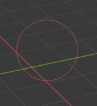
Рисунок 1
Управление кистью
Это наиболее распространённые горячие клавиши для управления кистью.
- Установить размер кисти F
- Установить силу кисти Shift-F
- Поворот текстуры кистиCtrl-F
После нажатия этих горячих клавиш вы можете настроить значение в интерактивном режиме или введя цифры.
Двигайте мышь вправо или влево, чтобы увеличить/уменьшить значение (дополнительно с активированной точностью (Shift) и/или привязкой (Ctrl). Наконец подтвердите (ЛКМ, Return) или отмените (ПКМ, Esc).
Вы также можете инвертировать направление/эффект кисти, удерживая Ctrl.
Кисти
Для режимов рисования/лепки каждый тип кисти представлен как инструмент на панели инструментов. С другой стороны, кисть представляет собой сохраненный набор всех настроек кисти, включая имя и миниатюру. Все эти настройки можно найти и изменить, в настройках инструмента (кисть, текстура, обводка, спад и курсор).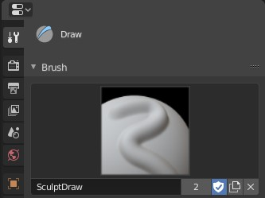
Рисунок 2
Режим скульптинга (Sculpt Mode) похож на режим редактирования (Edit Mode) тем, что он используется для изменения формы модели, но режим скульптинга использует совершенно другой рабочий процесс: вместо работы с отдельными элементами (вершинами, ребрами и гранями), область модели изменяется в основном с помощью кистей.
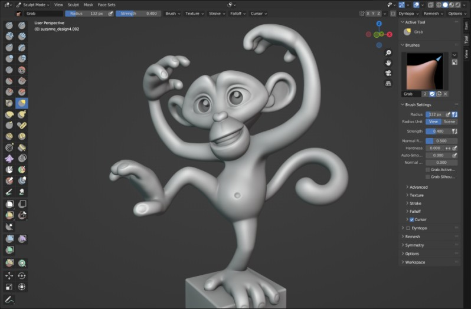
Рисунок 3
Доступ к режиму скульптинга осуществляется из меню режимов в заголовке 3D-окна просмотра или с помощью кругового меню Ctrl-Tab. После входа в режим скульптинга панель инструментов и настройки инструментов 3D-окна просмотра изменятся на панели, относящиеся к режиму скульптинга. Курсор изменится на круг, чтобы указать размер кисти.
Кисть
Sculpt Mode легко узнаваем по поведению и визуализации кисти. Все обычные элементы управления кистью по-прежнему применяются, но кисть для лепки отображается в 3D. Это означает, что кисть будет следовать кривизне поверхности, ориентируя радиус в соответствии с топологии Нормáлей. Внутреннее кольцо курсора кисти используется для отображения силы кисти.
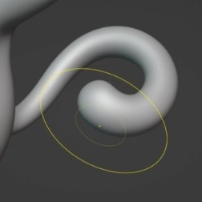
Рисунок 4
Обычные кисти
Существует множество кистей на выбор, но это наиболее распространённые кисти, которые используются при лепке. Более подробная информация о кистях для лепки в разделе Toolbar.
Глиняные полоски
Для набросков общей формы и наращивания объёма перед детальной проработкой.
Схватить
Потянуть геометрию по экрану для придания ей общей формы.
Гладкий
Сглаживание и сжимание поверхности, чтобы устранить шум или сгладить формы.
Рисовать
Обычное добавление и вычитание на поверхностях. Эта кисть часто настраивается с помощью различных
приёмов штриха и текстур для получения нужных эффектов.Скрести
Очистите и заполните поверхности, чтобы придать им четкую форму или более агрессивно сгладить.
Надувать
Раздувать или сжимать объемы или поверхности. Особенно полезно для контроля толщины цилиндрических форм.
Рисуй остро
То же, что и Draw, но с гораздо более резким спадом. Полезно для добавления складок, трещин и других острых краев.
Складка
Смесь кистей Draw и Pinch . Полезно для создания детализированных складок или заострения существующих складок для дополнительного блеска.
Подвес (snake hook).
Похоже на Grab , но эта кисть будет динамически отпускать и подбирать геометрию во время мазка. Перетаскиваемая геометрия также следует углу мазка, что делает ее очень полезной для вытягивания геометрии. Идеально использовать вместе с Динамическая топология (dyntopo) .
Задание 1.
- Запустите Blender и создайте новый файл.
- Удалите камеру и источник света.
- Выделите куб и нажмите клавиши Ctrl + 3.
- Примените модификатор.
- Нажмите Объект – Гладкое затенение, чтобы сгладить фигуру.
- Выберите плоскость Y или -Y.
- Нажмите Shift + D, продублируйте полученную фигуру и с помощью инструментов масштабирования и поворота создайте заготовку для уха.
- Выделите ухо, нажмите на кнопку Настройки модификаторов и выберите модификатор Симметрия.
- В модификаторе Симметрия в качестве Объекта симметрии укажите голову модели (выберите Пипетку и щелкните ей по голове модели).
- Выделите голову, продублируйте её (Shift+D) и превратите в заготовку для мордочки.
- Аналогично создайте заготовку для носа.
- Выделите все объекты и поднимите их немного вверх.
- Добавьте UV-сферу и разверните её на 900 как показано на рисунке.
- Уменьшите сферу до размера глаза и поместите на нужное место.
- Добавьте для глаза модификатор Симметрия (Объект симметрии – голова).
- Нажмите комбинацию клавиш Ctrl+A и выберите Масштаб.
- Поочередно добавьте модификатор Мультиразрешение с уровнем 3 для головы и с уровнем 2 для мордочки и носа (для установки уровней удобно нажимать на кнопку Подразделить).
- Выделите голову и из Объектного режима перейдите в режим Скульптинга.
- Выберите кисть Перемещение.
- Сверху в правой части экрана найдите кнопку Симметрия и выберите ось X
- Нажмите клавишу F, чтобы увеличить область влияния и изменяя при необходимости радиус поэкспериментируйте с формой головы вытягивая и вдавливая различные её части.
- Выйдите из режима Скульптинга головы в Объектный режим.
- Выделите ухо и перейдите в режим скульптинга (второе ухо станет невидимым, но по возвращении в объектный режим оно вернется).
- Используя ту же кисть Перемещение придайте уху желаемую форму и вернитесь в объектный режим.
- Выберите мордочку, перейдите в режим скульптинга мордочки, тоже выберите ось X, придайте подходящую форму и выйдите в объектный режим.
- Аналогично перейдите в режим скульптинга носа, выберите ось X и придайте носу форму. Вернитесь в объектный режим.
- Снова перейдите в режим скульптинга головы.
- Выберите кисть Маска и увеличьте её интенсивность до 1. Ось симметрии – X.
- Нарисуйте углубления для глаз (для удобства работы можно временно отключать видимость сферы в коллекции).
- Инвертируйте маску нажав клавиши Ctrl+i.
- Выберите кисть Раздувание с интенсивностью 1. Ось симметрии – X.
- Удерживая клавишу Ctrl сделайте углубления для глаз.
- Нажмите Alt+M для выхода из режима маски.
- Снова выберите кисть Перемещение и с нажатой клавишей Shift немного сгладьте края глазниц.
- Снова возьмите кисть Маска и нарисуйте контур рта.
- Инвертируйте маску нажав клавиши Ctrl+i и нажмите кнопку Переместить.
- Зайдите в меню Скульптура – Установить центр – Центр трансформации в немаскированное.
- Используя зеленую стрелку сдвиньте рот немного внутрь.
- Нажмите Alt+M для выхода из режима маски.
- Снова выберите кисть Перемещение и с нажатой клавишей Shift немного сгладьте края рта.
- С помощью кисти Перемещение (изменяя её размер) создайте иллюзию шерсти.
- С помощью UV-сфер и модификатора Симметрия создайте животному зубы.
- Создайте материалы и установите цвета для всего кроме глаз.
- Создайте материал для глаза.
- Измените Временную шкалу на Редактор шейдеров (Shift+F3).
- В Редакторе шейдеров Найдите окошки Вывод материала и Принципиальный BSDF.
- Нажмите Добавить – Текстура – Изображение-текстура.
- Скачайте картинку с изображением глаза глаз.png.
- Нажмите кнопку Открыть в окошке Изображение-Текстура и найдите картинку с глазом.
- Для регулирования положения, вращения и масштаба изображения-текстуры добавьте Добавить – Вектор – Отображение.
- Чтобы правильно сгенерировать изображение: Добавить – Ввод – Текстурные координаты.
- Соедините всё по образцу и нажмите на клавишу Z и Рендеринг.
- Добавьте куб.
- Выделите куб и нажмите клавиши Ctrl + 2.
- Примените модификатор. 56. В режиме редактирования придайте кубу форму тела.
- Выделите половину фигуры и нажмите Delete и выберите Грани.
- Добавьте модификатор Симметрия. Поставьте галочку Ограничение.
- Выделите точку как показано на рисунке.
- Нажмите Delete и выберите Вершины
- Выделите все точки по периметру отверстия (для этого выделите одну из точек, затем нажмите Shift, Alt и щелкните мышью по любой другой).
- Вытяните нижнюю лапу используя клавишу E и стрелки для сдвига, а так же клавишу S для масштабирования.
- В самом конце щелкните правой кнопкой мыши и выберите Объединить вершины – В центре.
- Для создания верхней лапы выделите вершину, как показано на рисунке и удалите её.
- Выделите точки по периметру отверстия.
- Нажмите Меш – Трансформация – В сферу.
- Вытяните верхнюю лапу аналогично нижней.
- Подкорректируйте форму и положение рук передвигая вершины.
- Из цилиндра создайте хвост.
- Раскрасьте грудку, ушки и кончик хвоста
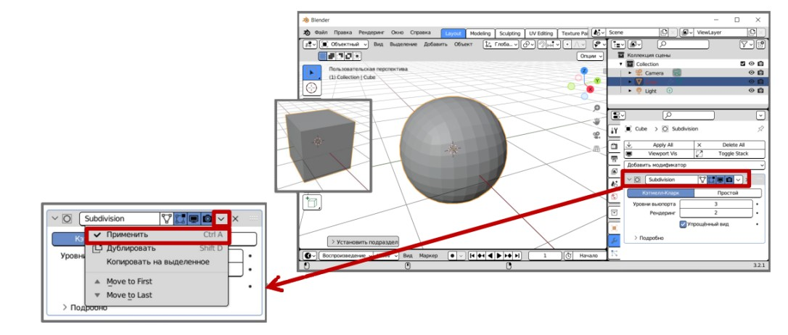
Рисунок 5
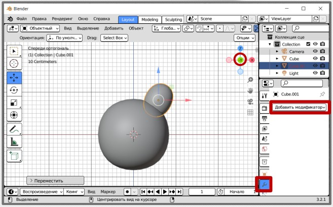
Рисунок 6
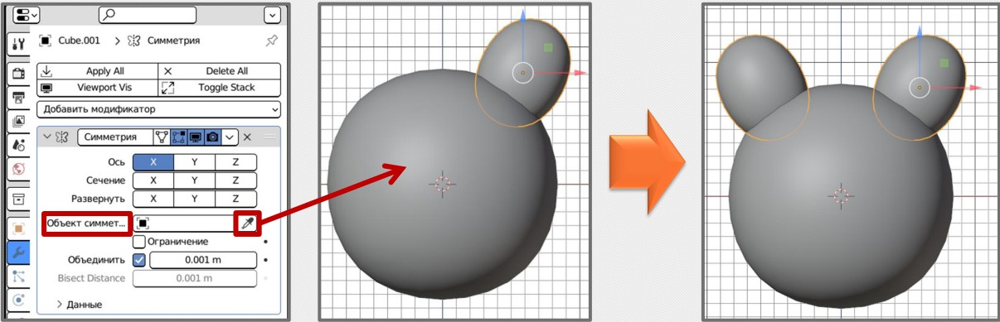
Рисунок 7
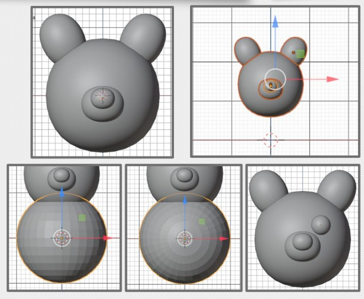
Рисунок 8
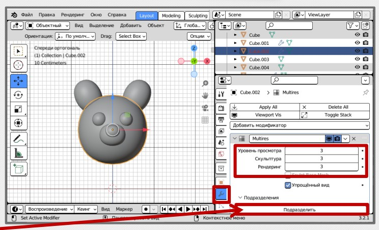
Рисунок 9
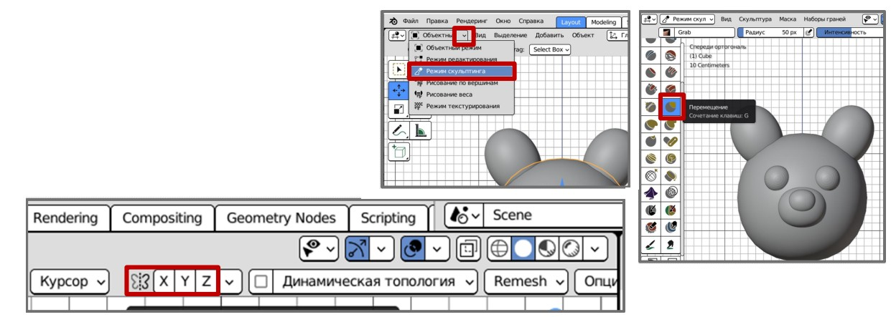
Рисунок 10
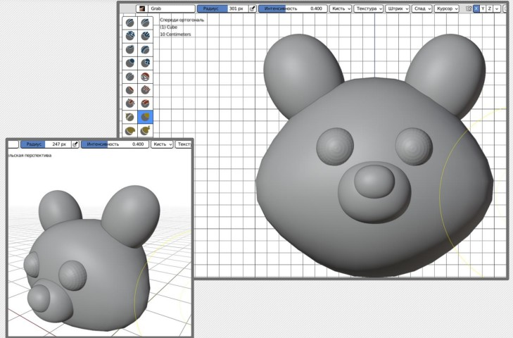
Рисунок 11
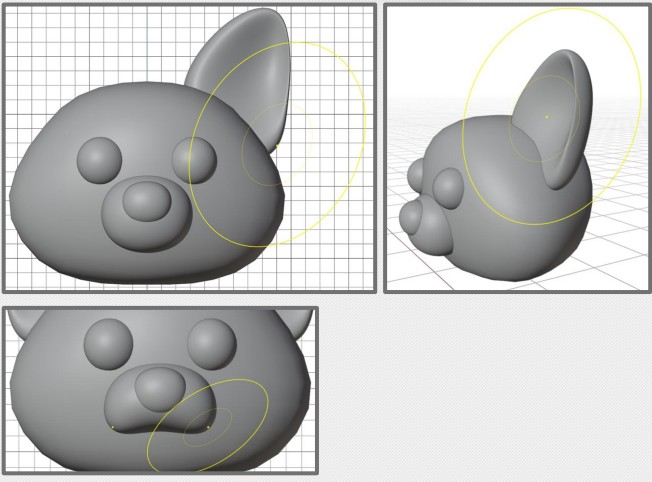
Рисунок 12
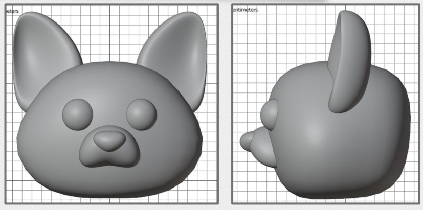
Рисунок 13
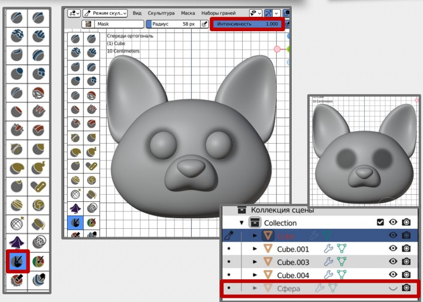
Рисунок 14
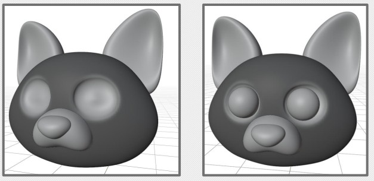
Рисунок 15
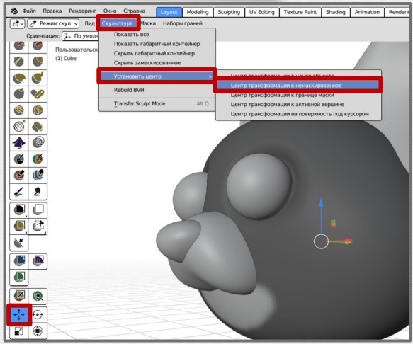
Рисунок 16
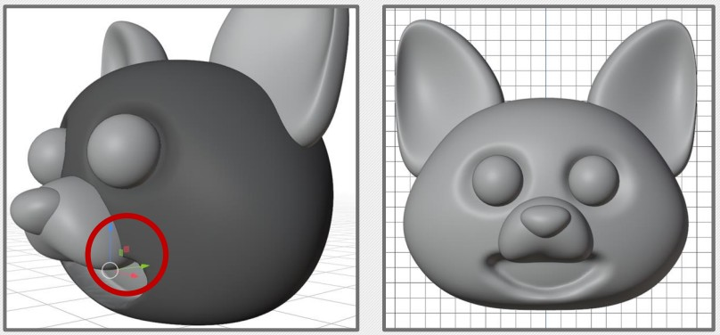
Рисунок 17
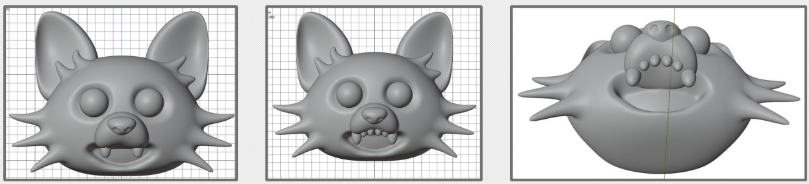
Рисунок 18
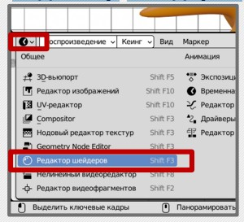
Рисунок 19
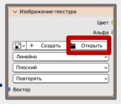
Рисунок 20
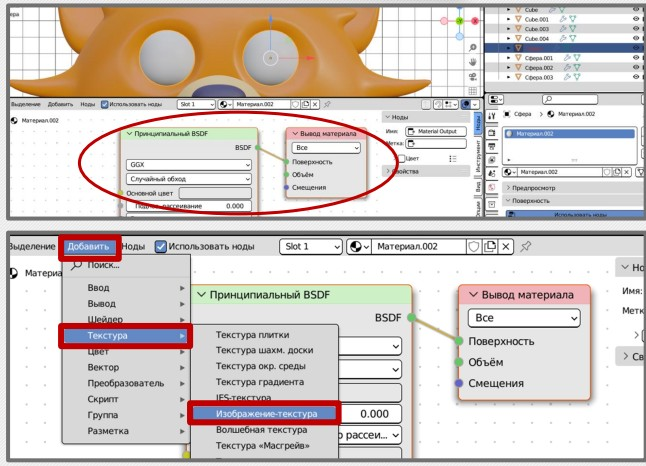
Рисунок 21
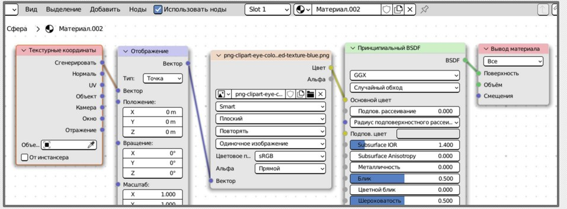
Рисунок 22
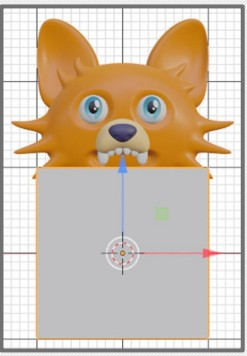
Рисунок 23
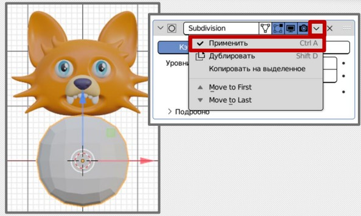
Рисунок 24
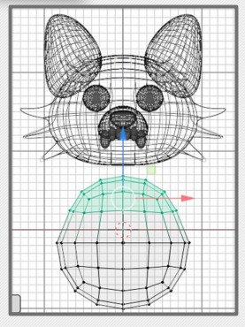
Рисунок 25
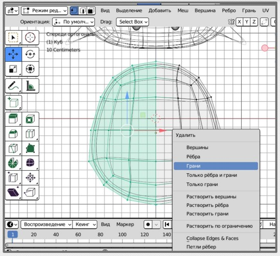
Рисунок 26
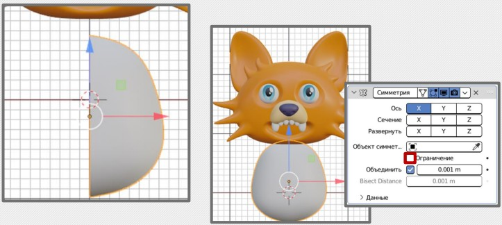
Рисунок 27
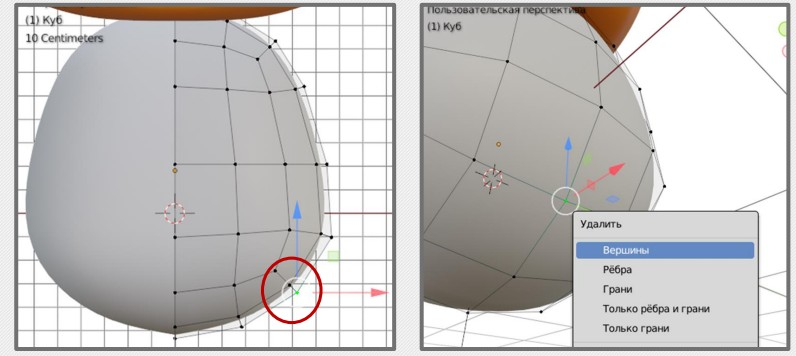
Рисунок 28
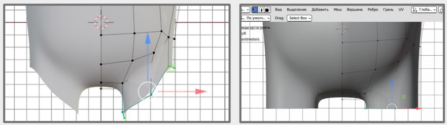
Рисунок 29
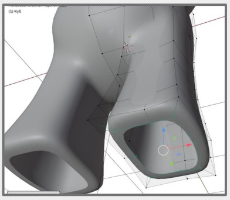
Рисунок 30
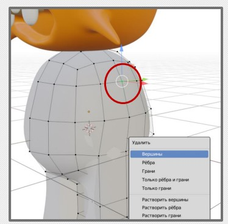
Рисунок 31
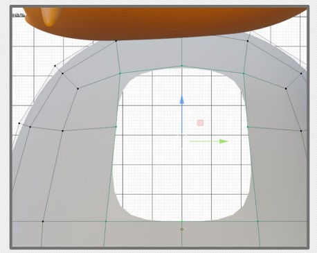
Рисунок 32
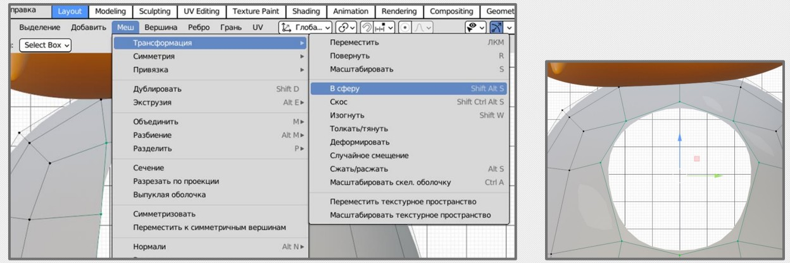
Рисунок 33
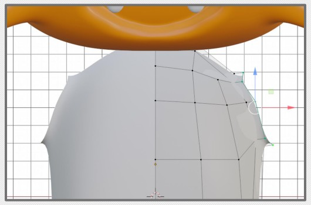
Рисунок 34
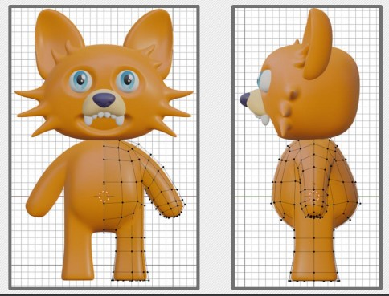
Рисунок 35
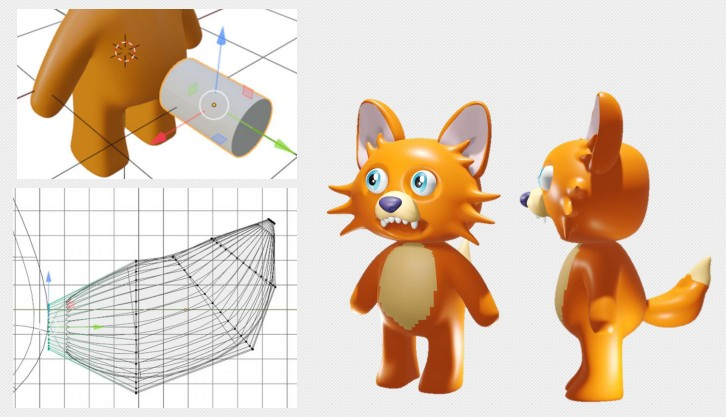
Рисунок 36
Система частиц
Когда вы включаете систему просчета частиц для объекта он может симулировать снег, огонь, дым, облака, искры, волосы, траву и многое другое. Когда для объекта включена система просчета частиц он перестает быть цельным объектом и начинает испускать частицы в соответствии с установленными параметрами.
В разделе Materials можно настроить размер частиц (используя эффект halo), текстуры, их цвет и прозрачность. Вы можете настроить способ испускания частиц в определенном порядке или случайно используя параметр random в разделе Particle. Частицы могу притягиваться различными силами по осям X,Y или Z и силой гравитации. Вы можете настроить количество испускаемых частиц, как долго частицы будут существовать, в какой момент они начнут испускаться и когда этот процесс должен закончиться, а так же с какой начальной скоростью они должны испускаться.
При добавлении эффекта частиц к мешу думайте о нем как о наборе маленьких частиц, создаваемых в разное время в различных частях меша, существующих некоторое время в сцене и исчезающих по окончании этого времени.
Основные Настройки Волос
Упражнение 1.
Создайте Сферу (UV-Sphere), добавте для нее систему частиц и измените тип частиц с "Emitter" на "Hair". Вероятно, в результате вы получите что то похожее на изображение ниже: длинные тонкие линии, направленные перпендикулярно поверхности шара.
Самое время настроить длину волос с помощью параметра "Hair Length" на панели Emission. Установите этот параметр в значение 1.00. Количество частиц-волос (Amount) оставьте равным 1000, как и было по умолчанию.
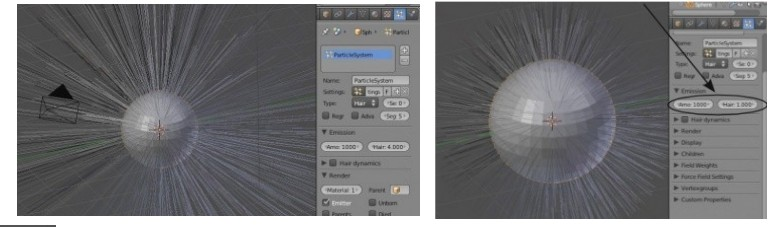
Рисунок 37
Теперь при рендере вы должны увидеть что то близкое к иллюстрации.
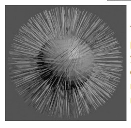
Рисунок 38
В разделе Particles есть много параметров, которые можно использовать для управления внешним видом волос, но давайте попробуем обойтись лишь основными из них для простоты понимания. Для того, что бы сделать наши волосы более "наполненными", случайной длинны и придать им эффект влияния гравитации, попробуйте сделать следующие настройки:
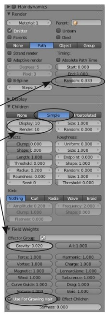
Рисунок 39
На панели Render - используйте слайдер Randomize для придания случайности длинны волос. На панели Children - выберите способ создания потомков " Simple ", затем установите параметр Render Amount в значение близкое к 10. Это заполнит сферу большим количеством "волос" без создания дополнительных частиц (что потребовало бы больших расчетов). Здесь есть и другие паметры, позволяющие создать различные эффекты. На панели Weights - активируйте опцию " Use for Growing Hair " и уменьшите значение параметра Gravity (до значения 0.020). Эти параметры должны создать эффект, как на этой иллюстрации.
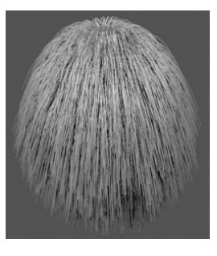
Рисунок 40
Попробуйте поэкспериментировать и с другими параметрами.
Задание 2.
- Выберите картинку и перетащите её в рабочее поле Blender зверек.png. Обнулите значения в полях Location, выставьте два нуля и один прямой угол в полях Rotation, задайте размеры изображения (кнопка S)
- Построение модели начните с квадратной плоскости: Add – Mesh – Plane.
- Разверните плоскость на такие же углы, как и у картинки.
- Выделите плоскость и нажмите кнопку tab. Переместите плоскость на нужное место и придайте ей форму с помощью кнопок вершины и движение.
- Используя кнопки ребро, движение и клавишу E дорисуйте форму для тела лисы.
- Перейдите в режим выбора плоскостей и нажмите клавишу А, в результате чего выделятся все плоскости.
- Измените расположение осей на экране на вид спереди или вид сверху и вытяните плоскости (клавиша Е). В результате должна получиться объёмная фигура объемная фигура.
- Выберите плоскости, из которых вытягивали и удалите их, нажав клавишу Delete – Faces.
- Установите модификатор Mirror, выберите ось, относительно которой будет проводиться симметрия, установите галочку в пункте Clipping. Отзеркаленная область не имеет вершин, ребер и плоскостей, следовательно, её нельзя выбрать и редактировать отдельно. Все что делается с исходной частью автоматически отображается на отзеркаленной. Если не получается правильно отразить фигуру относительно оси (вторая часть оказывается слишком далеко или слишком близко), можно использовать 3D-курсор.
- Лапы лисы не должны соприкасаться друг с другом поэтому необходимо разделить плоскость (добавить ребра), к которой будут прикрепляться элементы при помощи инструмента Loop Cut (после добавления ребер, их можно сместить: появляется двойная стрелочка курсора, передвижение мыши сместит созданные ребра).
- Выберите плоскость, из которой будет выходить элемент модели, и вытяните его также как тело.
- Аналогично создайте и вторую ногу.
- Добавьте картинки мордочка зверька.png и откорректируйте форму и размеры частей модели. Помогут инструменты Loop Cut, Knife, выделение вершин, ребер, полигонов и Move.
- Создание хвоста. Создайте дополнительные рёбра, удалите плоскость и вытягивайте рёбра так же как и у остальных частей тела. Подойдя к концу нужно закончить либо очень небольшой плоскостью, либо одной вершиной. Полученную вершину необходимо приклеить к отзеркаленной части, с помощью перемещения (Move).
- Сделайте полученную модель более гладкой добавив модификатор Subdivision Surface.
- Создание ушей. Добавьте новую плоскость и разбейте её на сектора. Прозрачность плоскости можно придать нажав на Toggle X-Ray.
- Установите размеры и форму плоскости по размеру и форме уха, добавляя ещё ребер, если это необходимо.
- Создание ушей. Добавьте новую плоскость и разбейте её на сектора. Прозрачность плоскости можно придать нажав на Toggle X-Ray.
- Установите размеры и форму плоскости по размеру и форме уха, добавляя ещё ребер, если это необходимо.
- Соедините обе части уха, для этого выделяете 4 соответствующие вершины и нажимаете кнопку F. Таким образом соединяем ВСЕ точки двух частей.
- Выделите все вершины одной из частей и переместите эту часть к другой.
- Выделите ухо и переместите его к основной модели в необходимое место.
- Установите модификатор Mirror, выберите ось, относительно которой будет проводиться симметрия, установите галочку в пункте Clipping.
- Глаза. Если создать глаза используя инструменты режима Sculpting не получается (это может быть связано с недостаточным количеством полигонов), можно использовать модификатор Boolean (операции вычитания и объединения). Нос и глаза создайте отдельно.
- Создание шерсти. Измените тип рендера на Cycles.
- Создайте материал и выполните следующие настройки:
- Для тела лисы создайте систему частиц.
- Выделите тело лисы и выберите режим Particle Edit.
- Для ушей также создайте цвет и частицы. Чтобы эффект применился к обоим ушам, поставьте галочку Use Modifier Stack.
- Установите камеру и свет и нажмите Render – Render Image
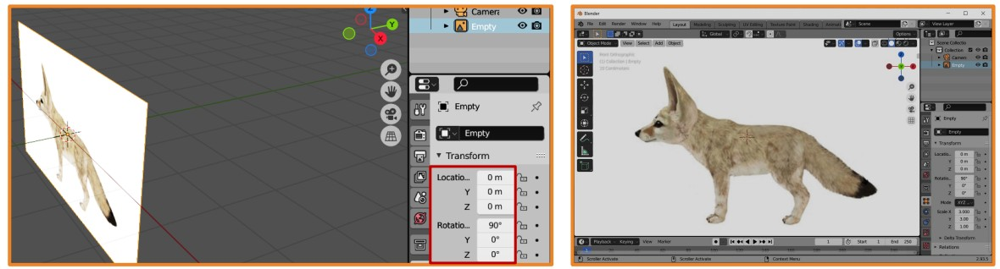
Рисунок 41
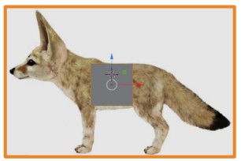
Рисунок 42
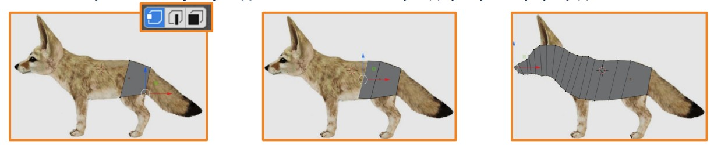
Рисунок 43
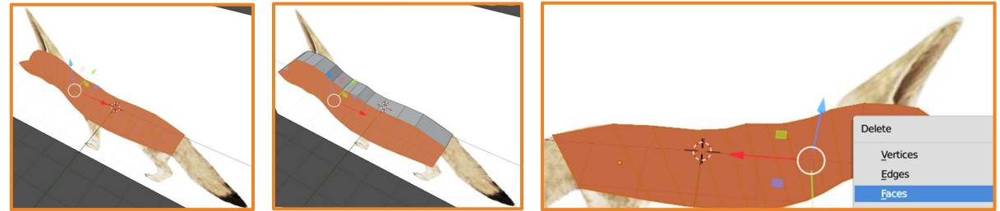
Рисунок 44
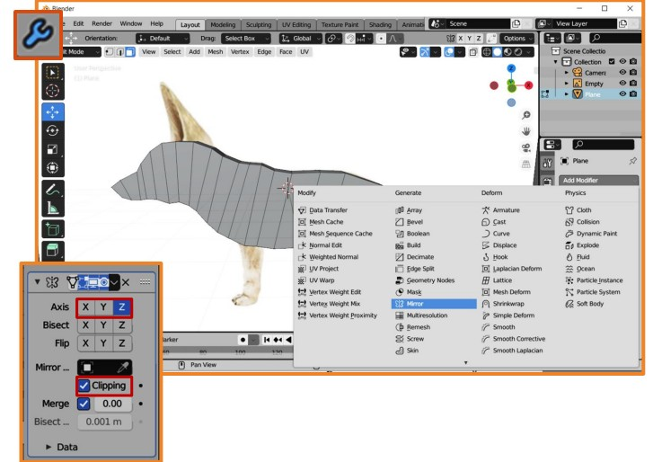
Рисунок 45
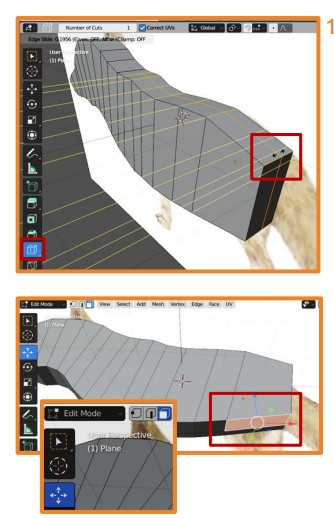
Рисунок 46
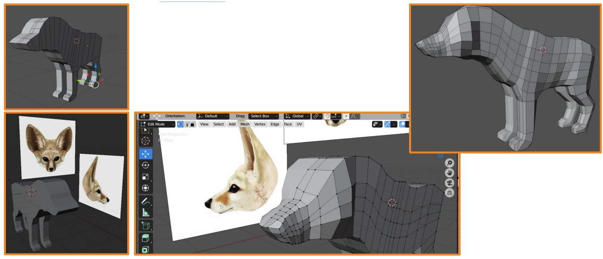
Рисунок 47
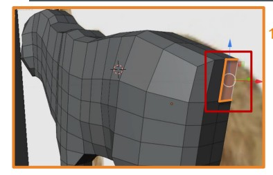
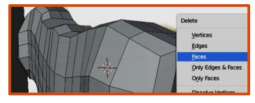
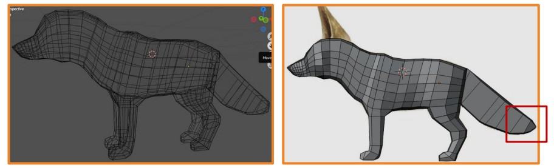
Рисунок 48
Рисунок 49
Рисунок 50


Рисунок 51
Рисунок 52
Рисунок 53
Если ни одна из существующих осей не подходит для создания зеркальной копии уха, используйте 3D курсор для создания локальной системы координат:
✓ установите 3D курсор в нужное место;
✓ щелкнув по сцене правой кнопкой мыши выберите Set Origion – Origion to 3D Cursor.
Рисунок 54
Рисунок 55
Рисунок 56
✓ Surface – Diffuse BSDF
✓ Color – ColorRamp
✓ Fac – Hair Info | Intercept.
Выделите сначала первый ползунок и установите для него цвет, а затем второй.
Рисунок 57
Рисунок 58
Рисунок 59
Рисунок 60
Рисунок 61
Обращайте внимание на свойства инструментов.
Рисунок 62
Поэкспериментируйте с инструментами: придайте шерсти нужное направление и объём, удалите шерсть из глаз и носа.... Периодически переключайтесь на режим Object Mode, чтобы просмотреть получающийся результат.
Рисунок 63
Рисунок 64
Рисунок 65
Контрольные вопросы
- Кисть – это?
- Опишите основные этапы управления кистью
- Для чего предназначен режим скульптинга?
- Опишите основные этапы создания волос.